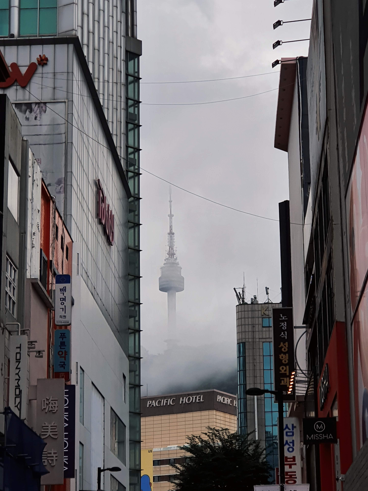
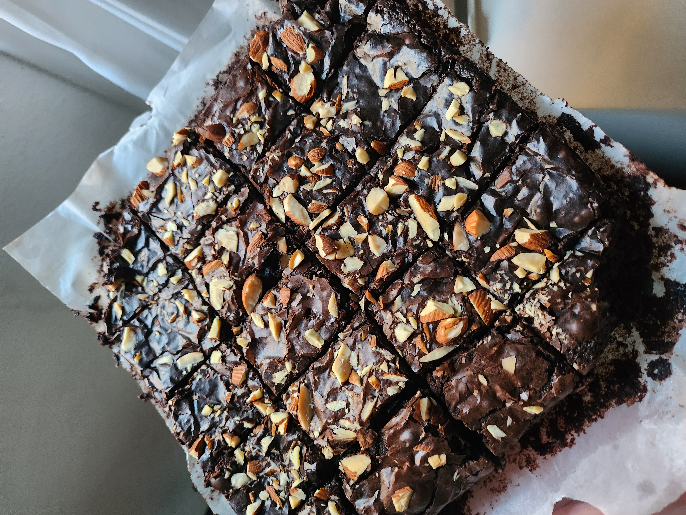
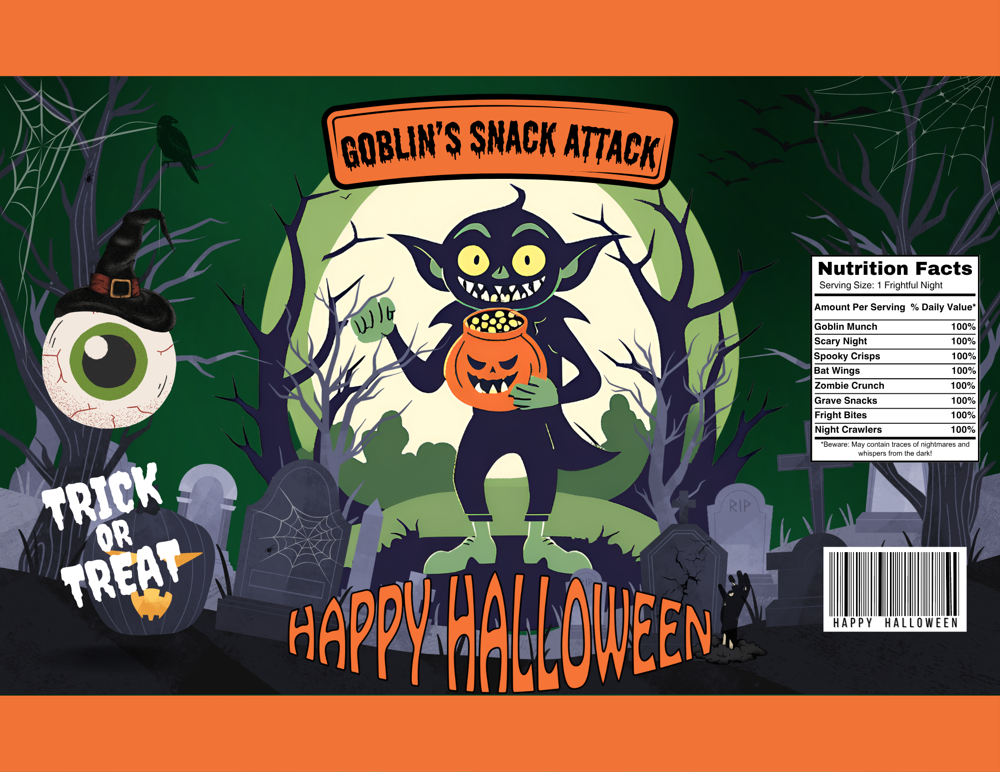
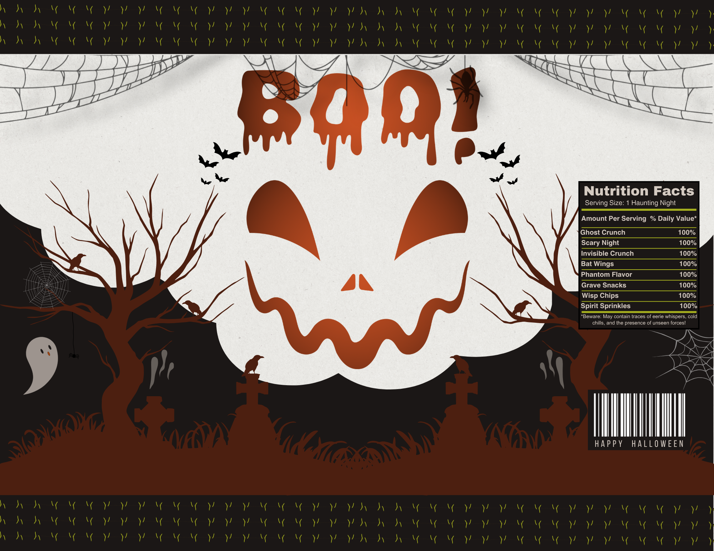

Photography
Photography is one of my creative outlets because it allows me to slow down and view the world through a different lens, capturing the quiet moods, architecture, and hidden details of everyday places.

Better Days, Always.
I believe that getting to know yourself is an ongoing process. There are always new things to learn, places to discover, and experiences that help shape the person you become.
I'm a Multimedia Studies student with an interest in photography and a fondness for simple everyday activities. I enjoy reading, listening to music, baking, and spending quiet afternoons watching movies or doing things I love.
Photography is one of my creative outlets because it allows me to slow down and view the world through a different lens, capturing the quiet moods, architecture, and hidden details of everyday places.

Baking is a hobby that allows me to slow down, focus on something creative, and take a break from my usual routine. I may not always get the results I expect, but every attempt gives me something new to learn.

A few examples of the digital products I've created, including invitations, cards, planners, and other creative projects.


You can reach me through:
Facebook: Maegan Bravo
Email Address: mdbravo2@up.edu.ph